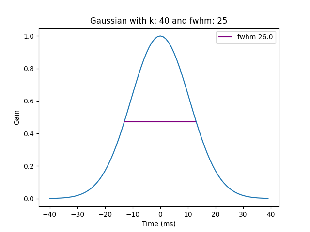
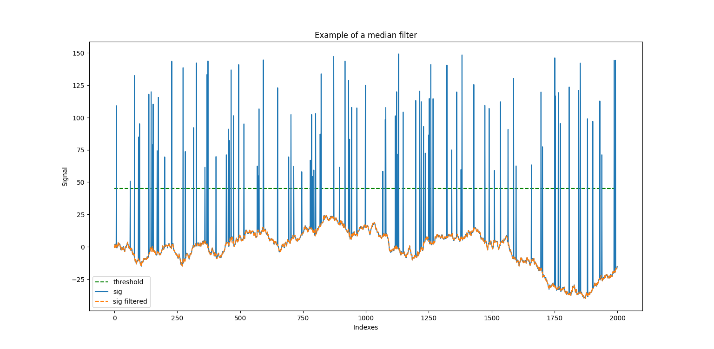
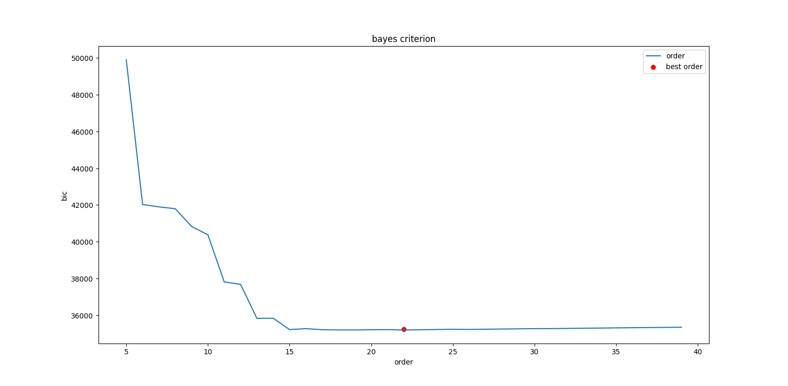
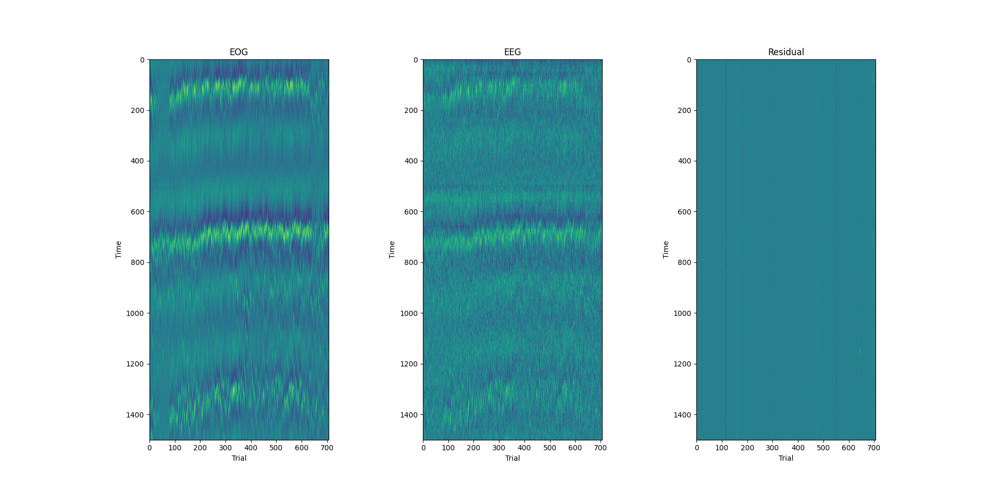

TimeSeriesDenoising package
TimeSeriesDenoising.Gaussian_smoothing_time_series_filter module
- gaussian_smoothing_filter(signal: ndarray, s_rate: int = 1000, k: int = 40, fwhm: int = 25) Tuple[ndarray, int, int][source]
gaussian smoothing filter
- Parameters:
signal (np.ndarray) – signal to be filtered
s_rate (int, optional) – sample frequancy. Defaults to 1000.
k (int, optional) – half window size. Defaults to 40.
fwhm (int, optional) – full width at half mawimum of the gaussian function. Defaults to 25.
- Returns:
filtered_sig : signal filtered g : gaussian function used gtime : gaussian timestamps
- Return type:
Tuple[np.ndarray, int, int]
- gaussian_smoothing_filter_example()[source]
Example of the gaussian smoothing filter
- Two main faktor influence the gaussian smoothing filter:
- the full width at half maximum (fwhm)
influene the width of the guassian
- the half window size (k)
evenly split between right and left
length of the window is therefore always an odd number
influence the number of indexes of the gaussian kernel
The goal is to find the a good ratio between k and fwhm, knowing that k is also the sample window for filtering (the bigger k is the smoother the signal would be), so that the kurve look like a bell and to not have too much near 0 values on the right and left side
The fwhm is higlighted in the figure below:
- The next two figures highlight the influence of the fwhm and k on:
the gaussian shape (=gaussian kernel)
and filtering of a example noisy signal
TimeSeriesDenoising.Linear_detrending module
TimeSeriesDenoising.Median_filter module
- median_filter_for_outliers(sig: ndarray, outlier_arr: ndarray, k: int = 20) ndarray[source]
filter signals outliers using median value on a given window
- Parameters:
sig (np.ndarray) – signal to be filtered
k (int, optional) – half window size. Defaults to 20.
- Returns:
filtered signal
- Return type:
np.ndarray
- median_filter_for_outliers_example()[source]
example of filtering signal outliers using median value on a given window Median filter is less sensisitive to outlier - unusually high/low values., than mean/gaussian filtering
Median filter is a nonlinear filter It should be applied on selected data points and not on all data points → i.e define a threshold and replace all the value above it with a median value

TimeSeriesDenoising.Polynomial_detrending module
- polynomial_detrending_with_bayes_criterion(signal: ndarray, order_min: int = 2, order_max: int = 25) ndarray[source]
polynomial detrending. Polynomial order defined based on bayes criterion
- Parameters:
signal (np.ndarray) – signal to be detrended
order_min (int, optional) – min order of the polynomial. Defaults to 2.
order_max (int, optional) – max order of the polynomial. Defaults to 25.
- Returns:
detrended signal
- Return type:
np.ndarray
- polynomial_detrending_with_bayes_criterion_example()[source]
Find best polynomial order with Bayes information criterion ():
Bayes information criterion (bic): Give an information about how close the y and y_fit are. We search for the minimal distance (red point on the figure below)
Formula:
\[bic =n \ln(\epsilon) + k \ln(n)\]\[\epsilon = n^{-1} \sum^{n}_{i=1}(y_{fit, i} - y_i)^2\]with:
k = polynomial order
y = raw signal
y_fit = predicted/fitted signal (=polynomial)
n = y length
- Detrending:
detreding is basically \(y - y_{fit}\).
TimeSeriesDenoising.Remove_artifact_with_last_squares module
- remove_artifact_with_last_square_between_two_signals(sig: ndarray, sig_artifact: ndarray) ndarray[source]
remove an artifact from a signal using the last square method. The artifact is the sig_artifact.
- Parameters:
sig (np.ndarray) – signal containing artifact that must be removed
sig_artifact (np.ndarray) – signal artifact
- Returns:
signal without artifact
- Return type:
np.ndarray
- remove_artifact_with_last_square_between_two_signals_example()[source]
Example of removeing an artifact from a signal using the last square method:
- Context:
EEG signal can be conain artifact because of the eyes movement (EOG signal).
- Goal:
Remove the eye movement artifact
- Method:
Use the last square template matching to remove the EOG artifact.
last square template matching:
\[\beta = (X^TX)^{-1}X^Ty\]\[res = y - X\beta\]
color map of the EOG, EEG, and residual signal:

TimeSeriesDenoising.Running_mean_filter module
- running_mean_filter(signal: ndarray, k: int = 20) ndarray[source]
runnign_mean_filter
- Parameters:
signal (np.ndarray) – signal to filter
k (int, optional) – half window size. Defaults to 20.
- Returns:
filtered signal
- Return type:
np.ndarray
- running_mean_filter_example()[source]
example of running mean filter.
- One faktor influence the running mean filter:
- the half window size (k)
evenly split between right and left
length of the window is therefore always an odd number
influence the number of indexes of the gaussian kernel
The effect of k is highlighted on the figure below: